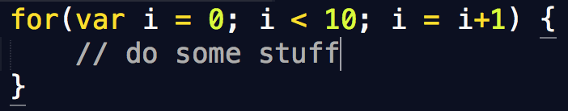
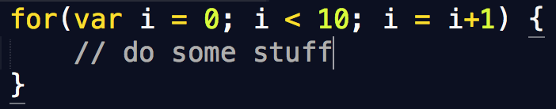
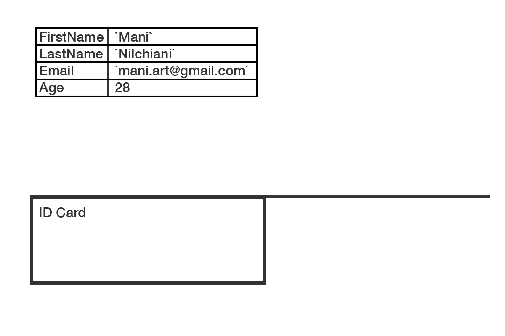
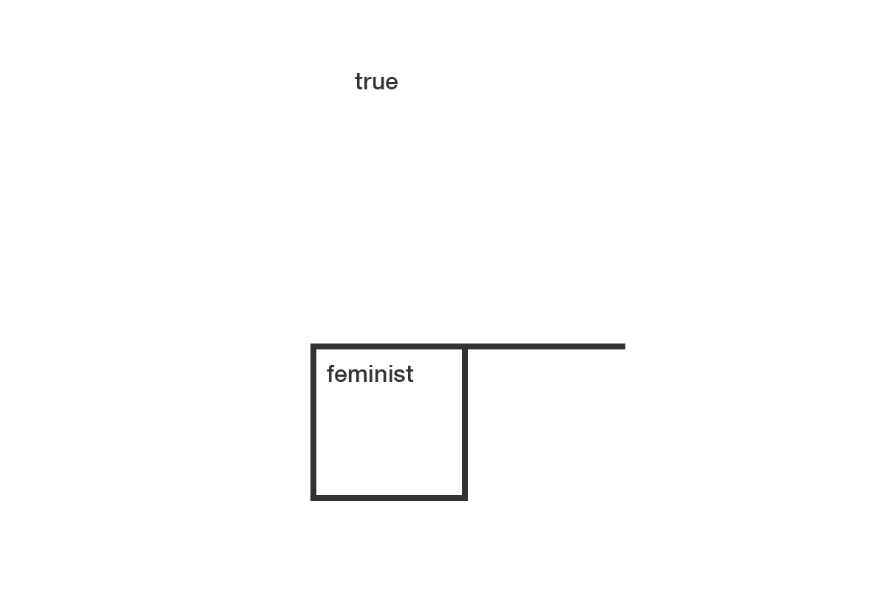

Internet as Platform, Programming as Medium
3. Simulation: The art of imitation contd.
The New Centre for Research & Practice 08.02.2015Revisiting recursion
 

Use your `i`
for(var i = 0; i < 10; i = i+1) {
// inside your `for` block, in each iteration,
// `i` is a different number.
// in case of this for loop, `i`:
// starts at 0
// is incremented by 1
// until it reaches 9 (note: not 10, but 9)
// so in each iteration, `i` will be:
// 0
// 1
// 2
// .
// .
// .
// 9
}
Using your `i` contd.
for(var i = 0; i < width; i = i+20) {
/* `width` is just a number! (like 10 in previous slide)
`i` is incremented by 20 (you dont have to increment by 1!)
now, let's use `i` to make something recursive happen:
*/
rect(i, height/2, 10, 10);
// draw rectangles at coordinates (i, height/2) with dimensions of 10
}
Animation 101
AKA The bouncy ball
Let's make it.
Animation 2.0
AKA A lot of bouncy balls
Let's make it.
Drawing with the mouse
Create a program that follows your mouse position, drawing circles of 5 px diameter. hint: it's silly simple.
see here.Vectors
Let's talk about `vector`s: Think of `point`s as `vector`s. Vectors can be two dimensional, or three dimensional. Just like points. In p5.js, creating points are very easy using the function `createVector`. You can either pass 3 numbers to it, creating a point in the 3D space, or pass 2 numbers and create a 2d point:
var myPoint = createVector(0,0);
more vectors...
And then you can access the `x` and `y` coordinates of this point using the the `dot notation` syntax:
var myPoint = createVector(100,200);
console.log(myPoint.x); // 100
console.log(myPoint.y); // 200
more vectors...
Note that `vector`s are nothing magical. They're just simple `Objects` that we saw in session 1. Let's reiterate objects: 
Mouse as mode of interaction
p5.js makes it very easy to detect user mouse events such as `click`, `press`, `release`, `drag`, etc. There are functions already implemented in p5.js that allow you to work with these mouse events:
var mouseX;
var mouseY;
var mouseIsPressed;
function mousePressed() {
}
function mouseReleased() {
}
function mouseDragged() {
}
function mouseMoved() {
}
function mouseClicked() {
}
function mouseWheel() {
}
mouseX
We've already worked with this wonderful variable that reports back to us the exact `x` coordinates of our mouse cursor at any time. Read more about it here. Let's make an example with it.
mouseY
We've already worked with this wonderful variable that reports back to us the exact `x` coordinates of our mouse cursor at any time. Read more about it here. Let's make an example with it.
mouseY
We've already worked with this wonderful variable that reports back to us the exact `x` coordinates of our mouse cursor at any time. Read more about it here. Let's make an example with it.
mouseIsPressed
This is simply a `Boolean` that tells us at any point in time, if the mouse is currently being pressed.
What the hell was a Boolean, you might ask.
Remembering the Boolean
A variable that takes only 2 values: `true` or `false`
mouseIsPressed
Read more about it here. Let's make an example with it.mouseReleased
Read more about it here. Let's make an example with it.mouseDragged
Read more about it here. Let's make an example with it.mouseClicked
Read more about it here. Let's make an example with it.mouseMoved
Read more about it here. Let's make an example with it.mouseWheel
Read more about it here. Let's make an example with it.Vectors + Mouse events = win!
Now let's see how we can use vectors to create points, mediated by our mouse interactions:
See it here.Trick: Leaving a trail
In p5.js, `draw` function runs recursively. You can choose to clear your background in each frame, or not. You can also clear your background with a lower opacity. This can easily give us a "trailing" effect. See:
See it here.Trigonometry, anyone? :)
Sine and Cosine
Before getting all defensive, let's look how great they look, visualized:

Sine and Cosine
Sine and Cosine
Sine and Cosine are very, very useful functions for animations. All we need to use these functions, is an angle. When you feed Sine or Cosine a linearly-increasing angle, they give you badk non-linearly, oscillating values. Plug these values into your animations and all of a sudden you get super funky easing animations. Let's play with Sine and Cosine
HomeWork
You can either keep working on the code for the pseudo-code you wrote first session, or create experimental anumations using Sine, Cosine, simple animation tecniques, mouse events, etc.